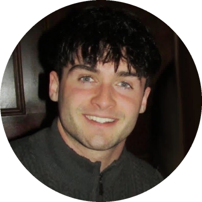
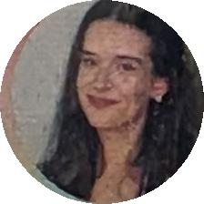
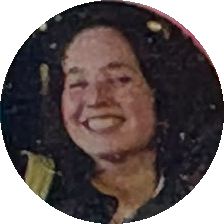
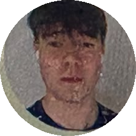
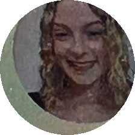

Meet the Welfare Team
We're students just like you. No judgement—just a friendly ear. Click any email to get in touch directly.

James
Welfare Officer
Moving to college can be a difficult time- that’s why we have established peer support hours with our JCR Welfare Officer, James O Dowd!The sessions will take place in the Welfare Space, on the second floor of Oldham House. If you feel anxious, homesick, or are struggling in any way, or even if you just need a cup of tea and a chat, don't be afraid to reach out
welfare@trinityhalljcr.comElla— House 90
Ethnic Minority Liaison
Hey, I'm Ella (She/Her), I'm from Donegal and I'm studying BESS. I can surprisingly play one song on the saxophone (hire me for birthdays)!
eokoh@tcd.ieTeddy— House 86
LGBTQ+ Liaison
Heyyy! My name's Teddy (he/him), I'm from New York City, and I study Environmental Science &Engineering. Anyone who can guess my middle name gets free toasties at the SU cafe for life
witherwt@tcd.ieAnja— House 85
International Liaison
I'm Anja (she/her), a Biological and Biomedical student from South Africa. I love Lidl bakery and convincing myself I don't need sunscreen in Ireland's UV Index of 2 (I do)
vanderma@tcd.ie
Alia— House 83
LGBTQ+ Liaison
Hey! I'm Alia, she/her. I'm from Bucharest, Romania, and I'm studying Law and Political Science. I'm a die-hard fan of 2010's pop music
tanasoia@tcd.ieEmilyKate— House 81a
Disability Liaison
Hi I’m EmilyKate, she/her. I’m from Wexford and I study JH Ancient History and Archaeology/French. My favourite sport is surfing... real surfing! See you in the lineup
bacone@tcd.ie...
...
...
James— House 82
Welfare Team Member
I’m from Sligo and I study Business, Economics and Social Studies. Don’t talk to me about GAA unless you have 3 hours to spare!
jcasserl@tcd.ieSam— House 89
Welfare Team Member
Hey! My name is Sam (he/him), and I'm a Cork-based Engineering with Management student. I'd like to think that Xian Street food would be struggling without my unwavering support.
oconns89@tcd.ie
Medha— House 88
Welfare Team Member
Hi there! I'm Medha (she/her) from New Delhi, India and I'm studying Computer Science! You can find me at Oldham working on a random DIY project or mini-painting at the benches!
saxename@tcd.ie
Máire— House 91
Welfare Team Member
Hi hi !!! I'm Máire (she/her)! I'm studying BESS and I'm from Limerick, formally known as stab city. I love having the chats, going on day trips and making TikToks on Oldham's stairs
nighuama@tcd.ie
Daniel— House 84
Welfare Team Member
Hey I'm Daniel, he/him. I'm from Roscommon and I study Irish and French. If I'm not hanging around the arts block green you can find me having a dance battle with a random lady I met in the George (and winning)!
hegartd4@tcd.ieLabhraidh— House 87
Welfare Team Member
Hi, I'm Labhraidh! My pronouns are she/her. I'm from County Kerry and I'm studying Law and French. My hobbies include tea drinking, regular pavving and evening trips to Brian's shop
costell4@tcd.ie